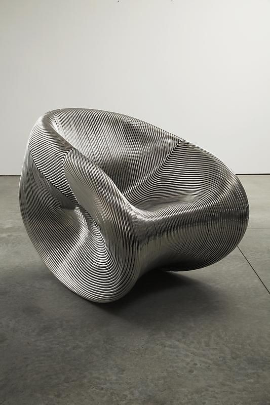
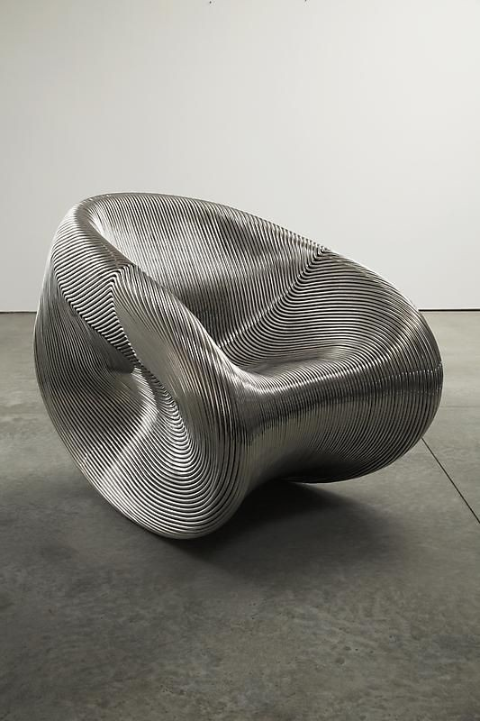

Ron Arad
Ring Chair
Description : Ce fauteuil est une véritable sculpture fonctionnelle, emblématique du design paramétrique et de l'art mobilier ("Art Furniture"). Il rompt radicalement avec les concepts traditionnels de rembourrage et de squelette pour proposer une masse volumétrique pure, traitée comme une topographie. Sa forme organique et érodée évoque une roche sédimentaire polie par le temps ou un modèle numérique matérialisé, créant une esthétique à la fois brute, futuriste et incroyablement tactile.
Structure : La pièce repose sur une technique d'accumulation complexe : une superposition dense de strates métalliques (probablement des tiges d'acier inoxydable soudées les unes aux autres ou des feuilles découpées au laser). Cette construction en "mille-feuille" crée une surface striée et vibrante qui accroche la lumière sous tous les angles, générant une texture visuelle cinétique. L'assise creusée en cuvette offre un contraste accueillant avec l'aspect extérieur monolithique et cuirassé de l'objet.
Dimensions : H. (Hauteur totale) : 75 cm, L. (Largeur) : 85 cm, P. (Profondeur) : 80 cm.